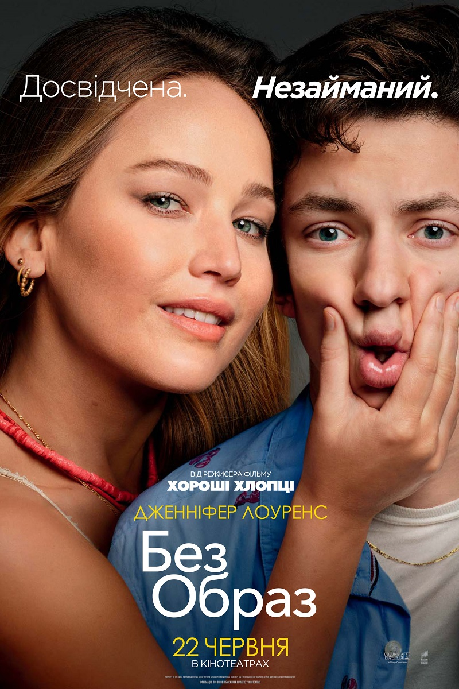

Без образ

- У головних ролях:
- Дженніфер Лоуренс — Медді
- Ендрю Барт Фельдман — Персі
- Рейтинг:
- Тривалість 90 хв
- imdb - 7
- Касові збори - 90 млн $
Опис:
Aмериканський комедійний фільм режисера україно-єврейського походження Гени Ступницького. У головних ролях знялися Дженніфер Лоуренс та Ендрю Барт Фельдман. Прем'єра в кінотеатрах США відбулася 23 червня 2023 року.